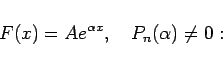

Inhalt Index DeskTop Bronstein

 Differentialgleichungen Gewöhnliche Differentialgleichungen Differentialgleichungen höherer Ordnung und Systeme von Differentialgleichungen Lösung linearer Differentialgleichungen mit konstanten Koeffizienten
Differentialgleichungen Gewöhnliche Differentialgleichungen Differentialgleichungen höherer Ordnung und Systeme von Differentialgleichungen Lösung linearer Differentialgleichungen mit konstanten Koeffizienten


Lösungen der inhomogenen Differentialgleichung mit konstanten Koeffizienten können durch Variation der Konstanten, mit der Methode von CAUCHY oder mit Hilfe der Operatorenmethode ermittelt werden. Eine partikuläre Lösung kann sehr schnell gefunden werden, wenn die rechte Seite von (9.12) eine spezielle Form hat.
|  | (9.43a) |
Eine partikuläre Lösung ist
 |
(9.43b) |
Wenn  eine m-fache Wurzel der charakteristischen Gleichung ist, d.h. wenn gilt
eine m-fache Wurzel der charakteristischen Gleichung ist, d.h. wenn gilt
| (9.43c) |
dann ist eine partikuläre Lösung. Diese Formeln können durch Anwendung des Zerlegungssatzes auch verwendet werden, wenn
| (9.43d) |
ist. Die zugehörigen partikulären Lösungen ergeben sich als Real- bzw. Imaginärteil der Lösung derselben Differentialgleichung für
| (9.43e) |
auf der rechten Seite.
| Beispiel A |
|
Für die Differentialgleichung y''-6y'+8y=e2x ergeben sich die Polynome P(D) =D2-6D+8 mit P(2) =0 und P'(D) =2D-6 mit , so daß eine partikuläre Lösung lautet . |
| Beispiel B |
|
Die Differentialgleichung führt auf die Gleichung . Aus ihrer Lösung erhält man eine partikuläre Lösung der Differentialgleichung. Dabei ist y1 der Imaginärteil von |
, Qn(x) ist ein Polynom n-ten Grades:
Eine partikuläre Lösung kann immer in der gleichen Form gefunden werden, d.h. als Ausdruck . R(x) ist ein mit xm multipliziertes Polynom n-ten Grades, wenn  eine m-fache Wurzel der charakteristischen Gleichung ist. Geht man von einem Lösungsansatz mit unbestimmten Koeffizienten des Polynoms R(x) aus und fordert man, daß er der gegebenen inhomogenen Differentialgleichung genügt, dann können die unbekannten Koeffizienten aus einem Satz linearer algebraischer Gleichungen bestimmt werden. Die Methode ist besonders in den Fällen F(x)=Qn(x) für
eine m-fache Wurzel der charakteristischen Gleichung ist. Geht man von einem Lösungsansatz mit unbestimmten Koeffizienten des Polynoms R(x) aus und fordert man, daß er der gegebenen inhomogenen Differentialgleichung genügt, dann können die unbekannten Koeffizienten aus einem Satz linearer algebraischer Gleichungen bestimmt werden. Die Methode ist besonders in den Fällen F(x)=Qn(x) für  und oder für anwendbar. Hier wird eine Lösung der Form gesucht.
und oder für anwendbar. Hier wird eine Lösung der Form gesucht.
| Beispiel |
|
Die Wurzeln der zur Differentialgleichung gehörenden charakteristischen Gleichung sind . Da der Superpositionssatz gilt, können die partiellen Lösungen der inhomogenen Differentialgleichung für die einzelnen Summanden der rechten Seite der Reihe nach gesucht werden. Für den ersten Summanden liefert das Einsetzen des Ansatzes y1=x2(ax+b) in die rechte Seite , woraus folgt: a = 1 und b = -6. Für den zweiten Summanden liefert das gleiche Vorgehen . Die Koeffizientenbestimmung ergibt , also . Die allgemeine Lösung lautet folglich |
Die EULERsche Differentialgleichung
| (9.44a) |
kann mit Hilfe der Substitution
| cx+d=et | (9.44b) |
| Beispiel |
|
Die Differentialgleichung x2y''-5xy'+8y=x2 ist ein Spezialfall der EULERschen Differentialgleichung für |